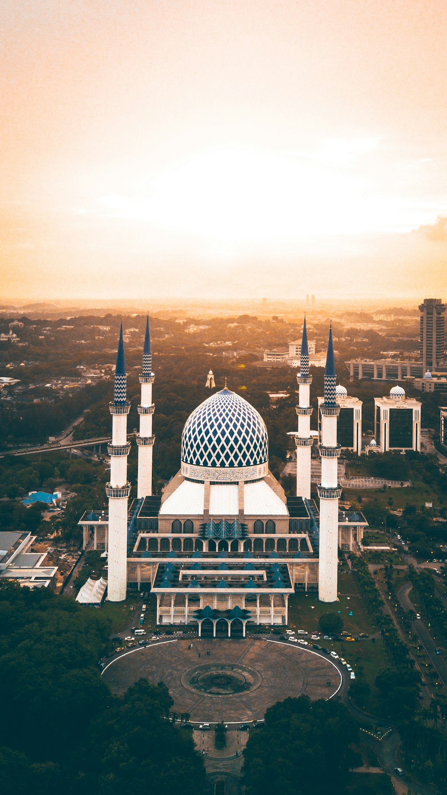

Um refúgio de paz, esperança e amor para você e sua família.
Seja muito bem-vindo à Igreja Adventista do Sétimo Dia de São Mateus. Venha renovar sua fé, cantar louvores e aprender ensinamentos práticos da Bíblia Sagrada.
Nossos Horários de Adoração
Encontros acolhedores para todas as idades na Rua Antônio Previato, 1001.
Escola Sabatina
Estudo interativo da Bíblia Sagrada em pequenas classes com espaço para perguntas e reflexão.
Culto Divino
Celebração congregacional de adoração, louvor ao Criador e mensagem bíblica expositiva.
Culto Jovem (JA)
Música contemporânea, testemunhos inspiradores e temas da juventude cristã.
Oração & Estudo Bíblico
Recarregue as energias espirituais no meio da semana com oração e estudo dos evangelhos.
Culto da Família & Esperança
Mensagens de encorajamento para superação de desafios diários e fortalecimento do lar.
Central de Séries Bíblicas
Assista gratuitamente às temporadas de estudos bíblicos preparados para enriquecer o seu conhecimento da Palavra de Deus.
Venha Adorar Conosco!
Local de fácil acesso na Zona Leste de São Paulo, com recepção amigável e estacionamento.
📍 Endereço Oficial:
Rua Antônio Previato, 1001
São Mateus, São Paulo - SP | CEP: 03962-000
Dízimos e Ofertas Voluntárias
Na Igreja Adventista, a devolução dos dízimos (10% que pertencem ao Senhor) e as ofertas voluntárias do coração sustentam o anúncio do evangelho, a ação social aos necessitados e o avanço da missão de Cristo.
Você pode devolver seu dízimo e ofertar pelo aplicativo oficial 7me ou diretamente via PIX da congregação.
Galeria de Fotos da Comunidade
Registros autênticos dos cultos, acampamentos e encontros de oração.
Como Podemos Ajudar Você?
Solicite uma Bíblia e guia de estudos gratuito ou envie seu pedido confidencial de oração.
História da IASD São Mateus
Uma história de fé e dedicação comunitária na Zona Leste de São Paulo.
O Início das Reuniões
Pequeno grupo de pioneiros reúne famílias para estudos bíblicos na região de São Mateus.
Estabelecimento do Templo
Abertura solene do templo na Rua Antônio Previato, 1001, acolhendo centenas de vizinhos.
Clubes de Desbravadores & Aventureiros
Fundação dos clubes para formação de liderança, princípios cristãos e serviço ao ar livre.
Comunidade Viva & Conectada
Portal digital inclusivo, reforçando o alcance do evangelho para todas as famílias do bairro.
Os 8 Remédios Naturais de Deus
Princípios comprovados de saúde integral promovidos pela Igreja Adventista mundialmente.
1. Água Pura
Beba bastante água pura para hidratar as células e purificar o corpo.
2. Ar Puro
Oxigenação profunda em contato com áreas verdes para clareza mental.
3. Luz Solar
Ativação de vitamina D, fortalecimento imunológico e bom humor matinal.
4. Exercício Físico
Caminhadas e atividades regulares para fortalecer o coração e o corpo.
5. Repouso Reparador
Sono de qualidade à noite e o descanso semanal do sábado sagrado.
6. Nutrição Equilibrada
Alimentos integrais, frutas e verduras com redução de ultraprocessados.
7. Temperança
Equilíbrio no trabalho e abstenção total de substâncias nocivas.
8. Confiança em Deus
Fé e oração que trazem paz interior e serenidade nas tribulações.
Clubes e Ministérios
Atividades formativas para crianças, adolescentes, jovens e famílias em São Mateus.

Clube de Desbravadores
Acampamentos, pioneiria, cidadania, noções de sobrevivência e crescimento do caráter cristão.
Inscrever Filho(a) ↗
Ação Solidária Adventista (ASA)
Assistência a famílias em vulnerabilidade de São Mateus com alimentos, roupas e apoio emocional.
Quero Ajudar ↗
Louvor e Jovens Adventistas (JA)
Coral, equipe instrumental e encontros dinâmicos da juventude de fé aos sábados à tarde.
Participar ↗Marcos e Referências Oficiais
Documentos autênticos da Igreja Adventista do Sétimo Dia para estudo e consulta pública.